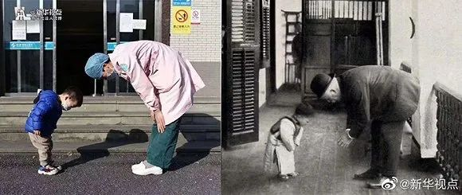

上海援鄂医疗队：我们不能治好肺炎就不管了
原文链接 备份链接 澎湃新闻记者 李佳蔚 郁斐 制图 进驻武汉第一天，上海医疗队就知道，要治愈的不仅是患者身体，治愈出院也不会是服务终点。 时至今日，事实证明他们做得不赖。 2月7日，上海中山医院第四批医疗队进驻武汉大学人民医院东院，整建 …
 图片来源：@新华视点
图片来源：@新华视点
实习记者：刘世龙
“
该幅照片因与20世纪初时杭州广济医院（现浙江大学医学院附属第二医院）院长梅藤根与小患者相互鞠躬的一张照片颇为相似，而受到网友热议，也被称为“跨越百年”的医患互敬照片。
”
2020年2月23日，新华社旗下@新华视点发布一张3岁男孩与医护人员互相鞠躬的图片引起外界关注。
@新华视点消息称，2月22日，浙江省绍兴市中心医院隔离病房一位3岁的小患者治愈出院，向护士阿姨鞠躬致敬，护士也顺势对其回礼鞠躬，这一幕恰巧被拍了下来。据悉，该小患者有发热症状，核酸检测为阴性，经治愈后出院。
该幅照片因与20世纪初时杭州广济医院（现浙江大学医学院附属第二医院）院长梅藤根与小患者相互鞠躬的一张照片颇为相似，而受到网友热议，也被称为“跨越百年”的医患互敬照片。

另据绍兴越牛新闻客户端报道，当天出院时，小男孩好几次对精心照顾他的“护士妈妈”表达了感谢。分别前，泽泽突然对护士鞠了一躬，护士也被孩子的可爱和真诚感动，随即也弯下腰来，鞠躬答谢。而这感人的一幕刚好被路过的同事记录了下来。
不过，界面新闻注意到，也有网友针对绍兴市中心医院这张照片发出不同声音，认为有摆拍嫌疑。“新闻图片讲的是时间的真实性，一个三岁孩子真的有这样高的文化和人生感悟境界吗？”有网友对此质疑。
@新华视点称上述照片由浙江省绍兴市中心医院提供。2月24日上午，绍兴市中心医院对界面新闻回应称，该照片是偶然所得，并没有摄影师或其他成年人指使小男孩鞠躬。
据该医院办公室工作人员介绍，男孩出院当天，医院举办了一个欢送仪式。小男孩在等父母来接时，负责照顾他的护士一直在陪其玩耍。
因为欢送仪式需要照片，现场有人负责拍照，所以在小男孩做出鞠躬这一突然举动时，就被恰好拍了下来，“当时只有他的爷爷奶奶陪护，所以并不像网友怀疑的那样，不存在被父母强制要求的可能。”
院方没有透露当事小男孩及其家人的具体情况。“本来我们只是在自己医生朋友圈里面传了一下，可能被媒体记者关注到了，图片就被要走了，没想到在网络上火了。”该医院办公室工作人员表示。
未经授权 禁止转载

原文链接 备份链接 澎湃新闻记者 李佳蔚 郁斐 制图 进驻武汉第一天，上海医疗队就知道，要治愈的不仅是患者身体，治愈出院也不会是服务终点。 时至今日，事实证明他们做得不赖。 2月7日，上海中山医院第四批医疗队进驻武汉大学人民医院东院，整建 …
原文链接 备份链接 新型冠状肺炎肆虐的当下，发热孕妇在孝感的处境很尴尬：妇产科不接收发热孕妇，发热门诊不接受孕妇，医院之间相互推脱，他们得不到治疗的机会。 文 | 吴美芬 1月22日，在武汉工作的邹杰（化名）和怀孕四个月的妻子，回到家乡孝 …
原文链接 备份链接 2020 02 19 星期三 武汉封城第28天 穿过疫城 图/文：艾晓明 今天小区依然限行，昨天到达的女性用品医院自己取走80箱，我们给光谷会展方舱送去的有40箱，还有大约312箱。今天上午先去到工地，和那里的朋友一 …
原文链接 备份链接 澎湃新闻记者 杨喆 实习生 陈思旭 2月15日下午2点30分，申波终于走出了湖北省黄石市传染病医院。去武汉参加公司年底聚餐时他不幸感染了新冠肺炎，1月23日被确诊，此后他在医院里共住了23天。 这23天，申波觉得自己像 …
原文链接 备份链接 从第一例患者入院，金银潭医院已超负荷运转近两个月。医生、护士、病人、志愿者，都在为新冠病毒不眠不休，昼夜奋争。绝望和希望、晦暗和明朗、苦涩和感动，也交织纵横，罩住整座江城。 全文7410字，阅读约需14分钟 点击下图 …